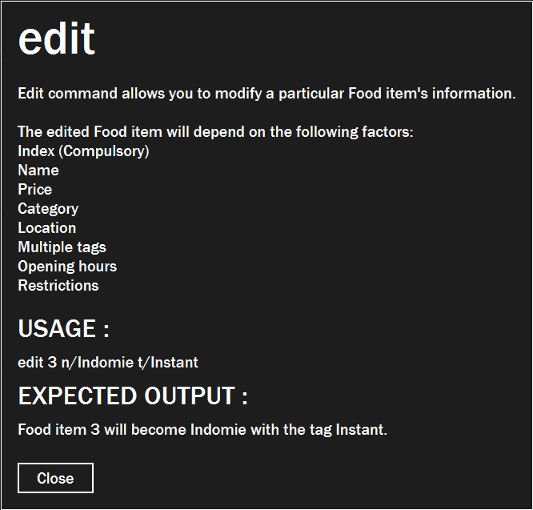

Overview
$aveNUS is a command line interface (CLI) financial planning application that my team and I designed for CS2103T (Software Engineering) module in School of Computing, National University of Singapore (NUS).
In this project, we morphed the sample address book application into $aveNUS, an application that allows NUS students to track their financial spending with regards to food purchases. Additionally, the application provides them with the best food recommendations within their current budget as well as a savings feature to track their savings.
The table below provides a quick summary of the symbols and formatting used in this portfolio.
|
Command that can be typed into the command box |
|
Success execution of command |
|
Tips that might be useful |
|
Additional information that is good to know |
|
Important pointers to take note |
Summary of contributions
This section provides a summary of the contributions that I have made to the team project.
Major enhancement: UI
I have updated the UI and added numerous front end functions to improve the look and quality of the app.
What it entails
Firstly, I updated the look of the app to give it a more professional look and much more fitting to the purpose of the application.
For example, I added a Wallet section which shows the user’s current amount of money available to be used for purchases.
Another one would be the addition of the statistics tab which allows user to tab through their spending data to get a better understanding of their own spending habits and plan their future spending accordingly.
The font of the application has been carefully selected based on the list of TypeFaces available. This is to allow all users to be able to read the application easily, even those with reading difficulties.
The overall color scheme of the application is a result of hours and hours of brainstorming in which I have managed to successfully come up with color schemes for any theme selected by the user that is not only easy on the eyes, but also stylish in design.
There are also a list of themes available which gives the user a sense of freedom where they are able to tweak how the application looks according to their own preferences. There is also custom theme available to suit the tastes of even the most demanding of users.
Justification
The look of the app is the first thing that users see when starting up the application. By having a expertly designed UI, the user will feel more at ease when using the app as it gives a sense of overall professionalism.
The reasoning behind adding enhancements to the UI components such as statistics tab and wallet section is to make the app more convenient to the user. By adding such displays, the user will no longer have to type on the command line just to get the statistics that they desire. Even the most experienced of keyboard users will definitely not want to constantly type commands just for a bunch if information that could have been easily displayed on the screen.
The themes are added so that the users are able to easily modify how the app look to their likings. Due to our team’s foresight and forward-thinking nature, we thought that it would be much more accommodating to the user. Imagine having to stare at the same application for hours on end without being able to change the look of the application at all, which is why it is important to have themes.
Highlights
As of now, this feature does not have any CLI implementation as I prioritise being able to display the features first.
A menu tab has been created on the left side of the application with a variety of buttons available such as help menu, and theme button which allow user to know what they can do before even reading the user guide.
The MainWindow has been meticulously modified and tweaked to make the application look more professional and
numerous bug fixes were done to allow most laptop to open the application without any problems.
Minor enhancement: Information Features
I have added a command called info command, and improved the already implemented help command.
What it does
The info command allows users to view more information about a particular command.
For example, by typing info add, new window will be opened displaying everything that the user needs to know about
the command add such as usage example, and even expected output.
The help command initially only allow the user to copy the user guide’s url and paste it onto the browser which
is not very helpful in my opinion. As such, I have decided to include the list of commands available and also
enable the HelpWindow to automatically open up the user guide using the system’s default browser.
Justification
Firstly, the info command is implemented to give users a better understanding of how the application works. The
information listed for the commands are written as detailed as possible without over-using technical terms. This works
like an in-built user-guide, hence improving convenience.
Secondly, the enhanced help command is done so as to provide users with more convenience. The list of commands is to
allow users to easily find out the features that the app can provide without having to look through the entire user
guide. The clickable user guide is done so that the users will not have to manually copy paste the links onto their
browsers which saves a lot of time.
Highlights
While implementing both commands, my main train of thought was on user’s convenience and ease of usage. While
implementing the info command, I had to decide between displaying it on the ResultDisplay section or just open
up a new window which I have decided that would be much more detailed and convenient.
The improved help command causes the app to require internet connection in order to open the user guide which was
a point of discussion for our group at a certain point. I have decided to go through with it as copying URL would still
require internet connection to open up the user guide nevertheless. The ability to automatically open the system’s
default browser would definitely make it much more convenient for the user.
Other contributions
-
Project Management:
-
Added user stories as issues on GitHub
-
Initialized all the major milestones
-
Created appropriate labels for better documentation.
-
Improved the documentation for some PRs [Example: #189]
-
Reviewed pull requests by team members [Example: #223, #177]
-
Organized mini project milestones [Examples: #228]
-
Fixed bugs after they were found [PR #221]
-
-
Documentation:
Contributions to the User Guide
This section shows the contributions that I have made to the sorting feature of the User Guide.
| This application is optimized for screen resolution of 1400x900 pixels and higher. Anything lower than that and you might experienced some bugs. |
| You might experience some truncated detail on smaller laptop screens. As such, we would advice you to not to input really long names, description, etc. |
| Ensure that your scaling setting is set to 100% as anything higher might result in text being cut off. |
This section was done to enable users to find out the optimal screen resolution to use the application. This is due to the fact that the application might not work as intended on very small screen resolution, especially on the older generation laptops.
Smaller screen resolution might result in truncation in details in some section of the application
such as the info command.
The scaling setting reminder is done as our app is optimized to work in 100% scaling. Any higher and some section of the application might fall out of the monitor’s boundaries. This reminder is important as some laptops' default scaling setting is usually higher than 100%.
The following is my contribution to the general commands that the app can offer.
General Commands
General commands are used to enhance the user’s experience when using the app and also provide some useful information to make the user more familiar with the app.
Viewing help: help
Display the help screen that allows you to view the list of commands available and also open up the user guide
by clicking the Guide button.
|
You will see the help the help window, diplaying the list of commands available. |
Viewing previously typed commands: history
Shows the user’s previously typed commands in the Results Display.
The user can view up to 10 previously typed commands.
A message stating that "You have not entered any commands." is displayed if you have not input any commands prior to the call to history.
|
| This command only allows you to see previously typed commands. Any commands done through the buttons on the menu pane will not be shown. |
|
You will see a list of commands that you have previously typed in the Results Display. 
Figure 1. Example of view of $aveNUS after user inputs
history. History of previously typed command appears in the Results Display as shown. |
The history command will only display previous commands with no duplicate commands.Eg. typing history twice will only result in a display of history only ONCE in the Results Display.
|
Viewing information about a command: info
Displays the information of the command specified. A new window will be opened showing additional information about the specified command, usage example, and expected output of the command.
$aveNUS can only display one information window at a time. Therefore, subsequent usage of the info command will only
display the latest command specified.
|
| You will not have to worry about opening too many new information window as older information window closes as soon as a new one is opened! |
|
You will see a window pop-up specifying the details of the command you wanted more information about.

Figure 2. Example of view of information window after user inputs
info edit. |
Changing the application’s theme: theme
Changes the look of the application depending on the desired theme.
List of themes available are light and dark
The default theme of the application is dark
|
You are able to subsequently set the same theme one after another but it would not result in any change in themes. e.g. calling theme dark and then theme dark again will only result in one time change to dark theme.
|
|
The application’s theme will now change to dark theme. |
Contributions to the Developer Guide
This section shows the additions that I have made to the sorting feature of the Developer Guide.
UI component

API : Ui.java
The UI consists of a MainWindow that is made up of parts e.g.CommandBox, ResultDisplay, FoodListPanel, PurchaseListPanel, SavingsHistoryPanel, StatusBarFooter etc. All these, including the MainWindow, inherit from the abstract UiPart class.
There are pop-up windows that appeared when the calls the InfoCommand or HelpCommand which is a new window with their own stages. The CSS files for each pop-up windows is taken from the MainWindow which ensures that they always match the theme of the MainWindow should the user decide to switch the theme while either pop-up window is open.
The UI component uses JavaFx UI framework. The layout of these UI parts are defined in matching .fxml files that are in the src/main/resources/view folder. For example, the layout of the MainWindow is specified in MainWindow.fxml
The UI component,
-
Executes user commands using the
Logiccomponent. -
Responds to the user’s keyboard and mouse input.
-
Pop-up windows respond to the buttons on the menu tab.
-
Listens for changes to
Modeldata so that the UI can be updated with the modified data.
Logic component
API :
Logic.java
-
Logicuses theSaveNusParserclass to parse the user command. -
This results in a
Commandobject which is executed by theLogicManager. -
The command execution can affect the
Model(e.g. adding a food item). -
The result of the command execution is encapsulated as a
CommandResultobject which is passed back to theUi. -
In addition, the
CommandResultobject can also instruct theUito perform certain actions, such as displaying help to the user.
Given below is the Sequence Diagram for interactions within the Logic component for the execute("delete 1") API call.
delete 1 Command
The lifeline for DeleteCommandParser should end at the destroy marker (X) but due to a limitation of PlantUML, the lifeline reaches the end of diagram.
|